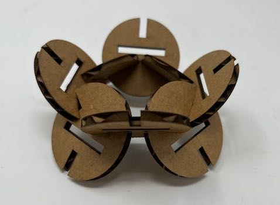
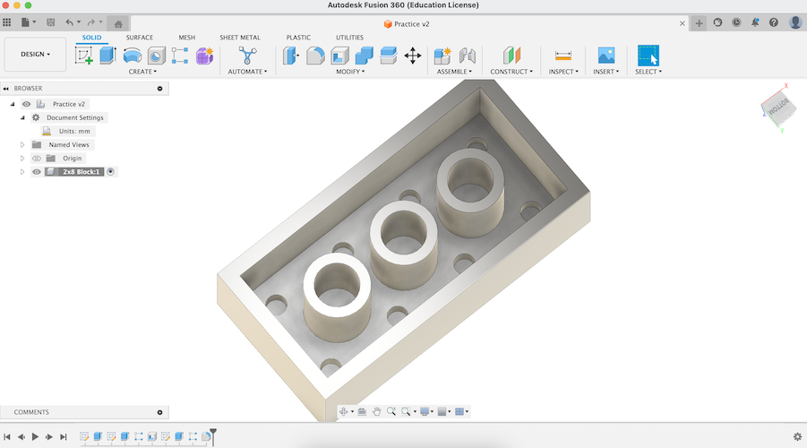
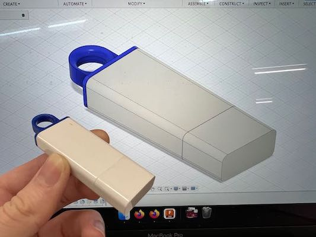
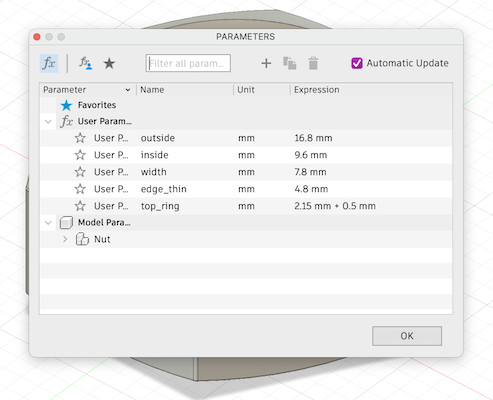
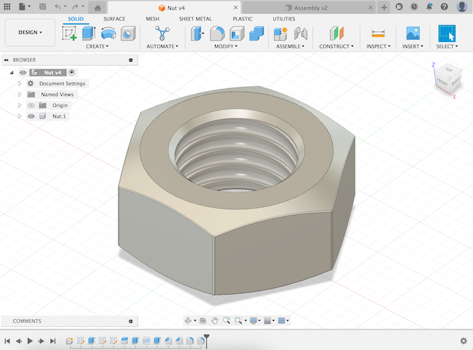
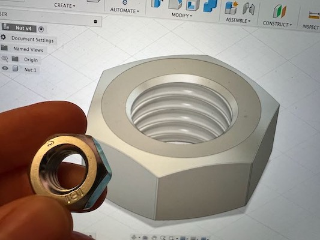

<div class="textcontainer">
<p class="margin"> </p>
<h3>Week 2: 2D Design & Cutting</h3>
<p class="margin"> </p>
<div class="flexrow">
<a id="btn" href="./week2.zip" download>Download my CAD files from this week!
</a>
</div>
<p class="margin"> </p>
<h4>Assignment 1: Box</h4>
The goal of this assignment was to make a box... and boy did I ever. The basic idea I had for the design was to use fingers cut out of the sides of the box to connect the base and four walls, and then I would have one the fourth wall a scored section that could fold over the top and act as the lid for the box.
<p class="margin"> </p>
<div class="flexrow">
<img src="./box_closed.jpeg" alt="geometric diagrams drawn in chalk on a blackboard">
</div>
<p class="caption">A box... my box in fact.</p>
It took me awhile to actually get to the laser cutter, both because I was really busy this week and also because my design process in fusion 360 was... iterative to say the least. The first time I tried making and arranging all the cuts I'd need to make, I did this weird combination of parameterizing things and just inputting values. This turned out to be not a smart idea. When it came time to cut, I tried changing one parameter to make the size a little more realistic and the entire thing got messed up.
<p class="margin"> </p>
<div class="flexrow">
</div>
<p class="caption">One example of a failed design... I changed on thing and the whole thing went crazy...</p>
There we honestly a couple more attempts before I landed on an honestly airtight design. What I did differently was parameterize literally everything, and then every single dimension was written as an equation of the parameters. This made me able to use the calipers to measure the depth of the cardboard and account for the teeth that would stick into any side to make a design that fit together perfectly.
<p class="margin"> </p>
<div class="flexrow">
</div>
<p class="caption">This was the design I actually cut out.</p>
Cutting it was a breeze thanks to Bobby's help. He definitely had to hold my hand through the process, but look at how nice he looked next to my finished cuts!
<p class="margin"> </p>
<div class="flexrow">
<img src="./bobby_with_cuts.jpeg" alt="3 kinds of circular cardboard tiles on a table.">
<img src="./box_cuts_irl.jpeg" alt="a laser cutter cutting an array of circular tiles out of cardboard." width="50%">
</div>
<p class="caption">Bobby!</p>
Putting the box together wasn't too hard... just hot glue and prayers. In the end, I think it came out pretty well! It is definitely a box!
<p class="margin"> </p>
<div class="flexrow">
<img src="./box_open.jpeg" alt="two cardboard sculptures that look kind of like people.">
<img src="./sculptures4.jpeg" alt="two identical cardboard sculptures reminiscent of TIE fighters from Star Wars.">

</div>
<div class="flexrow">
</div>
<p class="caption">Top: some of the smaller sculptures I made out of my tiles, plus the low stand. Bottom: two views of the larger sculpture I made with more of the tiles.</p>
If I were to make another iteration of this, I would do some more testing of
center notch arrangements to see if I could get a design with more options for
center connections, and I would experiment with printing these tiles in various
sizes for increased design flexibility.
<p class="margin"> </p>
<p class="margin"> </p>
<h4>Assignment 2: Fusion 360 Tutorial</h4>
<p class="margin"> </p>
I found a tutorial on YouTube for modeling a Lego brick, so I decided to follow
that. Most of the steps I found fairly easy, just through the skills I had
learned in class and figured out through trial-and-error by that point. (For
instance, I put all the dimensions given in the tutorial into parameters like
we learned in class, in case I ever want to change the shape of my lego block.)
I did learn some new tricks, though, including the fillet tool and the shell
tool. The tutorial also advised viewers to organize models within a file into
components, which seemed like a good idea to me.
<p class="margin"> </p>
<a href="https://youtu.be/6yPKMSb6ja8" target="_blank">Watch the tutorial yourself here!</a>
<p class="margin"> </p>
One fun thing I didn't learn from the tutorial (but afterwards looked up
separately online, because I was curious) was how to change the appearance of
solid bodies by applying a material to them and then editing the color of that
material. This was a familiar concept to me because of my experience with
Blender, but I hadn't known it was a thing you could do in Fusion 360. I used
that skill to make my Lego block a nice red color :)
<p class="margin"> </p>
<div class="flexrow">

</div>
<div class="flexrow">
</div>
<p class="caption">Top: the Lego block before its makeover. Bottom: a screenshot of me changing the block to be red.</p>
<p class="margin"> </p>
<p class="margin"> </p>
<h4>Assignment 3: Fusion Modeling</h4>
<p class="margin"> </p>
<div class="flexrow">
</div>
<p class="caption">My final assembly: a tableau of my flash drive and several copies of the metal nut I modeled.</p>
The first item I chose to model was my trusty flashdrive. I figured this would
be a good choice, because it was a combination of things I was pretty sure I
knew how to do (the rectangular body of the drive) plus some stuff I knew I'd
have to figure out (the circular hook on the end of the drive).
<p class="margin"> </p>
<div class="flexrow">
</div>
<p class="caption">The parameters for my flash drive. I knew the round hook was going to be tricky.</p>
I started with a basic rectangular prism, then used the fillet tool on the
edges to round them off. I thought up a few possible strategies for the hook on
the end, but I ended up extruding out a rectangular prism, cutting a hole in it
by extruding a circle, and then using fillet on the edges of the circle to make
the interior rounded edge.
<p class="margin"> </p>
Finally, for the seams in the body, I figured out how to use the split body tool
to create an edge at the correct distances, then used fillet just the tiniest
bit to create the small divot where the plastic parts fit together. For the
finishing touches, I added materials and color matched the model to my real
flash drive. It ended up looking pretty similar!
<p class="margin"> </p>
<div class="flexrow">

</div>
<p class="caption">The completed model pre-coloring, plus a photo of it the original flash drive in front of the colored model.</p>
<p class="margin"> </p>
For my second model subject, I picked a large metal nut I found in the lab
hardware supply. At first, I thought this would be easy: all I had to do was
make a hexagon, extrude it, cut a hole in the middle with a cylinder, and add
threads with the built-in thread tool.
<p class="margin"> </p>
<div class="flexrow">

</div>
<p class="caption">The parameters I measured for my nut. How hard can it be, right?</p>
<p class="margin"> </p>
However, I soon realized the bevel on edges of the nut was going to cause
problems. After much trial and error (and looking up some
<a href="https://youtu.be/c5UR_zdANJ4?t=110" target="_blank">tutorials</a> on
the Internet), I learned how to use the extrude tool with a taper angle to get
the result I wanted. The threads also caused me some problems, because Fusion
automatically corrects the hole size to a standard measurement but I couldn't
find one that matched the size I had measured on my nut. Eventually, I just went
with the standard option that was closest in size to what I was looking for.
<p class="margin"> </p>
<div class="flexrow">


</div>
<p class="caption">The completed nut model, plus a photo of it with the original nut held up in front for comparison.</p>
</div>